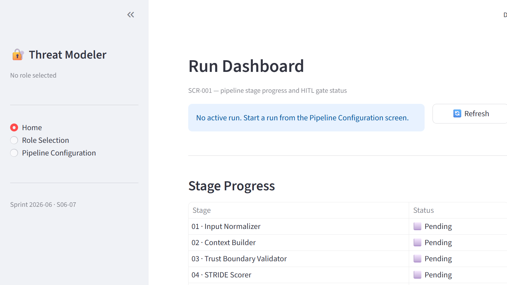
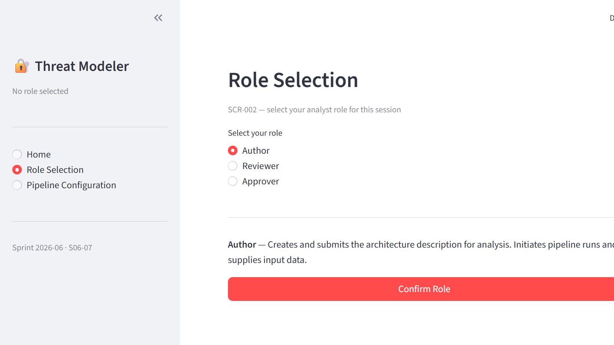
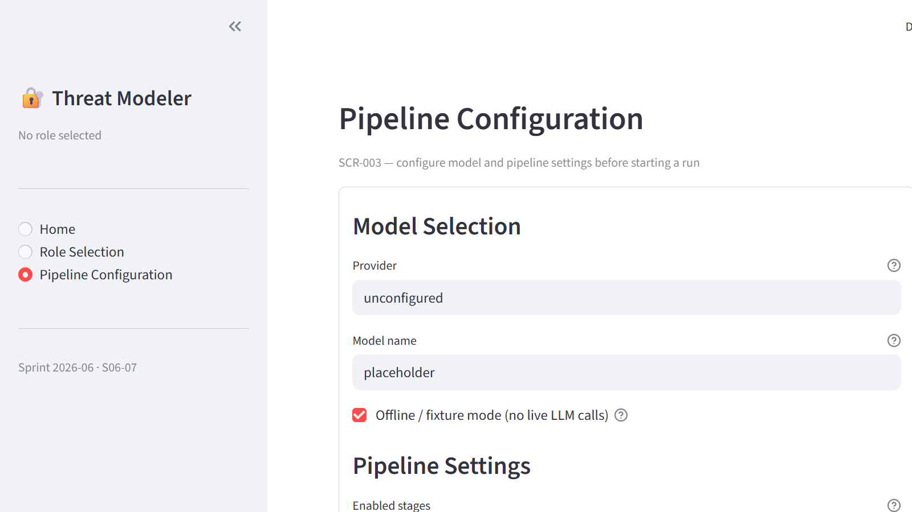

Multi-Agent LLM Threat Modeler
User Manual · Sprint 2026-06 · Audience: Security analysts, threat modeling practitioners, and project administrators
1 · Tool Overview
The Multi-Agent LLM Threat Modeler automates structured threat modeling of complex systems using a sequential pipeline of nine specialised AI agents. It accepts a system description as input — narrative text, an interface control document (ICD) spreadsheet, or both — and produces four classes of output artifact:
- Canonical Threat Model Graph (JSON) — a schema-validated document encoding the system hierarchy (system → subsystems → components → interfaces), STRIDE assessments, concrete threats with MITRE ATT&CK / CAPEC / CWE mappings, and mitigation controls with residual risk ratings.
- STIX 2.1 Bundle — machine-readable threat intelligence objects
(
attack-pattern+course-of-action+mitigatesrelationships) suitable for ingestion by SIEMs and threat intelligence platforms. - Mermaid Architecture Diagram — a text-based flowchart source showing the system topology with trust-boundary crossings annotated.
- Human-Readable Markdown Report — an executive-quality document with summary, system scope, trust boundary analysis, STRIDE findings, top threats, and mitigation mapping.
The Nine-Agent Pipeline
Each agent is a stateless processing stage. Agents receive the shared
FrameworkState object, call the configured LLM (or read a deterministic
fixture in offline mode), update the state, and pass it to the next stage. The
pipeline runs sequentially in the order below.
| Stage ID | Agent Name | Responsibility |
|---|---|---|
| agent_01 | Input Normalizer | Parses and normalises raw text and spreadsheet tables into a consistent structure. Populates state.tables and sanitises state.raw_text. |
| agent_02 | Context Builder | Builds a hierarchical system context graph from normalised input. Populates subsystems, components, and functions in the canonical graph. |
| agent_03 | Trust Boundary Validator | Identifies interfaces that cross trust boundaries, assigns boundary names, and sets trust_boundary_crossing flags on each interface. |
| agent_04 | STRIDE Scorer | Applies STRIDE (Spoofing, Tampering, Repudiation, Information Disclosure, Denial of Service, Elevation of Privilege) categories and scores (0–5) to each interface. |
| agent_05 | Threat Generator | Generates concrete threats for each interface, with MITRE ATT&CK technique IDs, CAPEC IDs, CWE IDs, likelihood (1–5), and impact (1–5). |
| agent_06 | STIX Packager | Packages all threats into a STIX 2.1 bundle and stores it in state.stix_bundle. |
| agent_07 | Mitigation Generator | Maps technical and administrative mitigation controls to each threat, with control IDs (e.g. NIST SP 800-53) and residual risk ratings. |
| agent_08 | Diagram Generator | Emits Mermaid flowchart source (one diagram per model level) stored in state.mermaid_diagrams. |
| agent_09 | Report Writer | Renders the final human-readable markdown threat model report and stores it in state.final_report. |
HITL Governance Model
Human-in-the-loop (HITL) gates pause the pipeline at defined decision points and require analyst action before execution continues. This ensures human oversight at every consequential stage of the threat modeling process.
Gates are classified as:
- Mandatory — always trigger regardless of artifact content (Gates 1–5).
- Conditional — trigger only when artifact metrics exceed configured thresholds (Gates 6–7).
Gate Decision Options
| Decision | Effect | Use when… |
|---|---|---|
| Accept As-Is | Approves the artifact exactly as produced. Pipeline resumes immediately. | The artifact is correct and complete with no changes needed. |
| Accept Changes | Submits an edited version of the artifact. The diff is recorded in the audit log. Pipeline resumes with the revised artifact. | Minor corrections are needed but the artifact is fundamentally sound. |
| Save Draft | Pauses the gate with intent to return later. Pipeline remains paused. | The analyst needs more time, information, or a second opinion before deciding. |
| Reject | Rejects the artifact. Pipeline halts with a GateRejectedError and records the rejection. A new run must be initiated. |
The artifact is fundamentally incorrect or the input data must be corrected before proceeding. |
2 · Installation and Setup
Prerequisites
| Requirement | Minimum Version | Notes |
|---|---|---|
| Python | 3.11 | 3.12 also supported |
| pip | 24.0 | Bundled with Python 3.11+ |
| Windows 10/11 or Linux | — | macOS also supported |
| Internet access | — | Required for hybrid (xAI Grok) mode only; not needed for offline/fixture mode |
| XAI_API_KEY env variable | — | Required for hybrid mode only; obtain from x.ai |
Setup Steps
Step 1 — Clone the repository
git clone <repository-url>
cd "Multi Agent Threat Modeler"Step 2 — Create and activate the virtual environment
Windows (PowerShell):
python -m venv .venv
Set-ExecutionPolicy -Scope Process -ExecutionPolicy RemoteSigned
.venv\Scripts\Activate.ps1Linux / macOS:
python3.11 -m venv .venv
source .venv/bin/activateStep 3 — Install dependencies
pip install -r requirements.txtThis installs Streamlit, OpenAI SDK (for xAI Grok), ChromaDB (retrieval), and STIX2 (export).
Step 4 — Configure the model provider
Offline / fixture mode (no API key required):
provider=unconfigured, which uses deterministic pre-recorded
fixture outputs for all nine agents. This is the recommended mode for
initial setup verification and automated testing.
Hybrid mode (xAI Grok — live LLM calls):
# Windows PowerShell
$env:XAI_API_KEY = "xai-your-key-here"
# Linux / macOS
export XAI_API_KEY="xai-your-key-here"Then select xai as the provider on the Configuration screen
(SCR-003) and enter grok-beta (or the current model name) in the
Model Name field.
Step 5 — Launch the Streamlit application
streamlit run src/threat_modeler/ui/app.py
The application opens automatically at
http://localhost:8501 in your default browser. The sidebar displays
the navigation menu. Select your role first (SCR-002), then proceed to the
Configuration screen (SCR-003) before starting a run.
3 · Primary Analyst Workflow
The typical end-to-end workflow for an analyst running the threat modeler from a fresh session is:
- Enter system inputs — navigate to Input Entry (SCR-004) in the sidebar. Enter a system name, upload one or more architecture files (CSV, XLSX, MD, TXT, YAML), and click ▶ Start Threat Model Run. The application parses the files and switches to the Run Dashboard.
- Select your role — navigate to Role Selection (SCR-002) in the sidebar and confirm which analyst role you are performing for this session.
- Configure the pipeline — navigate to Pipeline Configuration (SCR-003) and set the LLM provider, model, stage selection, and HITL gate preferences.
- Monitor progress — the Run Dashboard (SCR-001) updates stage status in real time. Each stage shows its completion state.
- Action HITL gates — when the pipeline pauses at a gate, a review panel appears. Review the artifact and choose Accept, Accept Changes, Save Draft, or Reject.
- Retrieve artifacts — after all stages complete and all gates are resolved, the four output artifacts are available for download or further processing.
SCR-004 — Input Entry Form
The Input Entry Form is the starting point for every new threat model run. Navigate to Input Entry in the sidebar to reach this screen.
Fields
- System name (required)
- A short, unique identifier for the system under analysis. This name is used in all output artifacts (report title, STIX bundle, Mermaid diagram header).
- System description (optional)
- Supplementary context describing the system's purpose and operational environment. This is concatenated with uploaded narrative text before being passed to agents. Can be omitted when a detailed narrative file is uploaded.
- Architecture files (required unless raw text is pasted)
-
Upload one or more files that describe the system. Accepted formats:
- CSV / XLSX — interface control document (ICD) spreadsheets. First row must be a header row. Each subsequent row becomes one entity in the canonical graph.
- MD / TXT / YAML / YML — narrative or structured
text descriptions. File contents are concatenated into the
raw_textfield of the pipeline state.
- Paste raw architecture text (optional)
- An expandable text area for pasting architecture text directly when file upload is not practical. The pasted text is merged with any uploaded narrative files.
Model Connection Banner
A status banner at the top of the form indicates the current model connection state:
- Offline / fixture mode (blue info banner) — the pipeline will use pre-recorded agent outputs. No live LLM API calls are made. This is the default when no provider is configured on the Pipeline Configuration screen.
- Connected (green success banner) — a live provider and model name are configured. Agents will make real LLM calls during the run.
Starting a Run
- Enter a System name.
- Upload at least one architecture file or paste raw text.
- Click ▶ Start Threat Model Run. The button is disabled until both conditions are met.
- The application parses the uploaded files, constructs an initial
FrameworkState, assigns a unique run ID, and switches the navigation to the Home (Run Dashboard) screen.
To discard all inputs and start over, click Clear.

SCR-001 — Run Dashboard
The Run Dashboard is the primary control surface. It is the default landing page and shows the current run state at a glance.

Stage Progress Table
The stage progress table lists all nine pipeline agents in execution order.
Each row shows the stage label and its current status icon. Status is derived
from st.session_state["pipeline_state"].messages: stages whose
stage_id appears in the messages list are marked Complete;
all others remain Pending.
| Icon | Status | Meaning |
|---|---|---|
| ⬜ | Pending | Stage has not yet executed |
| 🔄 | Running | Stage is currently executing |
| ✅ | Complete | Stage finished successfully |
| ⏸️ | Awaiting | Pipeline paused at a HITL gate after this stage |
| 🛑 | Halted | Pipeline halted by a validation error or gate rejection |
HITL Gate Status Panel
When st.session_state["gate_states"] contains entries, the gate panel
renders below the stage table. Each gate ID and its current status (e.g.
Open, Approved, Rejected) is listed. When a gate is open,
the analyst should navigate to the gate review interface to action it.
Active Run ID
The run ID uniquely identifies the current pipeline execution. It is displayed in an info banner at the top of the page. If no run is active, the banner instructs the analyst to start a run from the Configuration screen.
SCR-002 — Role Selection
Every session begins with a role selection. The selected role is stored in
st.session_state["role"] and displayed in the sidebar header throughout
the session. Roles determine which gate actions are available.

Available Roles
| Role | Description | Typical actions |
|---|---|---|
| Creates and submits the architecture description for analysis. Initiates pipeline runs and supplies input data. | Submit input, start run, monitor progress | |
| Reviewer | Reviews pipeline outputs and HITL gate artifacts. Approves or rejects trust boundary decisions and threat assessments. | Review artifacts, action gates, annotate findings |
| Approver | Has final approval authority over the completed threat model and any associated release decisions. | Final gate approval, sign-off on report, release authorisation |
Changing Your Role
If a role is already selected, the current role and its description are displayed above the radio group. Select a different role and click Confirm Role to update. The sidebar caption updates immediately on confirmation.
SCR-003 — Pipeline Configuration
The Configuration screen is used before starting a run to set the LLM provider,
model, enabled stages, and pipeline behaviour. Settings are stored in
st.session_state["settings_override"] as a RuntimeSettings
object and applied when the pipeline is initiated.

Model Selection Section
| Field | Default | Description |
|---|---|---|
| Provider | unconfigured | Set to xai to enable live Grok calls. Any other value activates fixture mode. |
| Model name | fixture | Passed verbatim to the LLM adapter. For Grok use grok-beta or grok-3-mini. |
| Offline / fixture mode | ✅ checked | When checked, the FixtureAdapter is used and no API key is required. Uncheck only when a valid XAI_API_KEY is set. |
Pipeline Settings Section
| Field | Default | Description |
|---|---|---|
| Enabled stages | All 9 stages | Multiselect of agent stage IDs. Deselect stages to skip them. Useful for partial runs during development or debugging. |
| Stop on validation error | ✅ checked | When checked, the pipeline halts with a ValidationHaltError if any stage produces a state that fails canonical graph schema validation. |
| Require HITL gates | ✅ checked | When checked, mandatory gates 1–5 are enforced and conditional gates 6–7 are evaluated. Uncheck for automated testing or demonstration runs. |
4 · HITL Gate Interaction Guide
When the pipeline reaches a gate, a GatePausedError is raised by the
gate engine and caught by the orchestrator. The pipeline halts, state.hitl_paused_at_gate
is set to the gate ID, and the gate checkpoint is recorded. The analyst must action
the gate before the pipeline can resume.
Fires after: before agent_01 (pre-pipeline)
Trigger condition: parse_error_count > 0 OR
source_provenance_complete == false.
Analyst action: Review the ingested input summary displayed in the gate panel. If the input looks correct, choose Accept As-Is. If the input is malformed or incomplete, choose Reject and resubmit with a corrected input file.
Common triggers: Empty raw_text with no tables, or
spreadsheet upload that failed to parse any rows.
Fires after: agent_02 (Context Builder)
Trigger condition: Always fires when HITL gates are enabled.
Artifact shown: The canonical graph as built so far: system name, subsystem list, component list, and function list.
Analyst action: Verify the system context graph is correct. Confirm the system name, subsystem decomposition, and component inventory match the architecture under analysis. If changes are needed (e.g. a subsystem is missing), choose Accept Changes and submit the corrected artifact.
Fires after: agent_03 (Trust Boundary Validator)
Trigger condition: Always fires when HITL gates are enabled.
Artifact shown: All interfaces with trust_boundary_crossing=true
and their assigned trust_boundary_name values.
Analyst action: Review identified trust boundary crossings. Add, remove, or rename crossings as needed. Incorrect trust boundaries will cause the STRIDE scorer and threat generator to produce inaccurate results.
Fires after: agent_04 (STRIDE Scorer)
Trigger condition: Always fires when HITL gates are enabled.
Artifact shown: STRIDE scores (0–5) and justifications for each interface.
Analyst action: Review STRIDE scores against your domain knowledge. Adjust scores that appear too high or too low. STRIDE calibration directly influences the threat generator's output in the next stage.
Fires after: agent_05 (Threat Generator)
Trigger condition: Always fires when HITL gates are enabled.
Artifact shown: All generated threats with MITRE ATT&CK / CAPEC / CWE identifiers, likelihood, and impact scores.
Analyst action: Review each threat for plausibility in context. Remove threats that are not applicable to the system under analysis. Add any significant threats the model missed. Adjusted threats flow into the mitigation generator in the next stage.
Fires after: agent_07 (Mitigation Generator)
Trigger condition: Always fires when HITL gates are enabled.
Artifact shown: All mitigation controls (technical and administrative) with control IDs, titles, descriptions, and residual risk ratings.
Analyst action: Verify mitigation coverage is adequate for each threat. Ensure residual risk ratings are realistic. Add missing controls before the artifact proceeds to STIX packaging and report generation.
Fires after: agent_02 (Context Builder)
Trigger condition: Fires when any of the following thresholds are exceeded:
merge_conflict_count ≥ 5approved_artifact_conflict_count ≥ 1(any conflict on a previously approved artifact)critical_field_conflict_count ≥ 1conflict_severity_max ≥ "high"
Analyst action: Review the conflicting fields listed in the gate panel and resolve each conflict by selecting the correct value before the context graph proceeds to trust boundary validation.
Fires after: agent_09 (Report Writer) — before final publication
Trigger condition: Fires when any consistency error is detected between the canonical graph and the STIX / report outputs:
canonical_stix_error_count > 0canonical_report_error_count > 0diagram_reference_error_count > 0consistency_warning_count > 10
Analyst action: Review the listed inconsistencies. Accept the existing outputs if the discrepancies are acceptable, or reject to trigger a corrective re-run of the affected stages.
5 · Configuration Reference
Configuration is managed via SCR-003 or programmatically through
src/threat_modeler/config.py. The root configuration object is
RuntimeSettings, composed of ModelSelection and
PipelineSettings.
ModelSelection
| Field | Type | Default | Description |
|---|---|---|---|
provider | str | "unconfigured" | LLM provider identifier. "xai" activates Grok; any other value activates fixture mode. |
model_name | str | "fixture" | Model name passed to the provider (e.g. "grok-beta"). |
offline_only | bool | True | When True, forces fixture mode regardless of provider setting. |
PipelineSettings
| Field | Type | Default | Description |
|---|---|---|---|
execution_mode | str | "langgraph-compatible" | Pipeline execution strategy. Use "langgraph-compatible" for full HITL gate support. |
require_hitl_gates | bool | True | Enable mandatory and conditional HITL gates. |
stop_on_validation_error | bool | True | Halt on canonical graph schema validation failure. |
enabled_stage_ids | list[str] | All 9 stages | Ordered list of agent stage IDs to execute. |
Offline vs. Hybrid Profiles
| Profile | provider | offline_only | API key required |
|---|---|---|---|
| Offline (fixture) | unconfigured | True | No |
| Hybrid (Grok) | xai | False | Yes — XAI_API_KEY |
HITL Trigger Rules
Conditional gate thresholds are configured in
Tests/fixtures/inputs/hitl/trigger_rules_default.json.
Override the path by passing rules_path to
HitlService.load_trigger_rules(). The schema for this file is at
docs/schemas/hitl_trigger_rules.schema.json.
6 · Role-Based Access
| Capability | Reviewer | Approver | Admin | |
|---|---|---|---|---|
| Submit input / start run | ✅ | ❌ | ❌ | ✅ |
| Monitor pipeline progress | ✅ | ✅ | ✅ | ✅ |
| Respond to HITL gates | ❌ | ✅ | ✅ | ✅ |
| Approve gate decisions | ❌ | ❌ | ✅ | ✅ |
| Reject artifact at gate | ❌ | ✅ | ✅ | ✅ |
| Download export artifacts | ✅ | ✅ | ✅ | ✅ |
| Edit agent prompts | ❌ | ❌ | ❌ | ✅ |
| Modify configuration | ✅ | ❌ | ❌ | ✅ |
st.session_state["role"] and validated by the backend gate engine
on every gate action (the actor dict passed to gate decisions must
include the role). Full UI-level role gating is planned for Sprint 2026-07.
7 · Results Export
After all nine stages complete and all HITL gates are resolved, four artifact
types are available. All exporters are importable from
threat_modeler.exports.
| Artifact | Format | Exporter | State field |
|---|---|---|---|
| Canonical Threat Model Graph | JSON string | export_json(graph) | state.canonical_graph |
| STIX 2.1 Bundle | stix2.Bundle | export_stix(graph) | state.canonical_graph |
| Architecture Diagram | Mermaid source text | export_mermaid(graph) | state.canonical_graph |
| Threat Model Report | Markdown string | export_report(state) | state.final_report |
Programmatic Export
from threat_modeler.exports import export_json, export_stix, export_mermaid, export_report
# After a pipeline run:
json_str = export_json(state.canonical_graph) # → JSON string
stix_bundle = export_stix(state.canonical_graph) # → stix2.Bundle object
mermaid_src = export_mermaid(state.canonical_graph) # → Mermaid flowchart string
report_md = export_report(state) # → markdown stringRendering the Mermaid Diagram
Paste the Mermaid source string into any of the following renderers:
- mermaid.live — online live editor
- VS Code — Markdown Preview Mermaid Support extension
- GitHub / GitLab markdown — fenced code block with
mermaidtag
STIX Bundle Usage
The stix2.Bundle object returned by export_stix() contains:
- One
attack-patternper threat in the canonical graph. - One
course-of-actionper mitigation (technical and administrative). - One
relationshipof typemitigateslinking eachcourse-of-actionto its parentattack-pattern.
# Serialise to JSON for SIEM ingest
import json
bundle_json = stix_bundle.serialize(pretty=True)
with open("threat_model.stix.json", "w") as f:
f.write(bundle_json)8 · Troubleshooting
- Symptom
- Pipeline pauses at
gate_0_input_integrityimmediately after starting. - Cause
- The pipeline state has no
raw_textand notables. This happens when the run is initiated without providing input data. - Resolution
- Provide input text in the Run Dashboard input field before starting the pipeline,
or populate
state.raw_textprogrammatically before callingorchestrator.run_planned_stages(state).
- Symptom
- Pipeline stops mid-run; Run Dashboard shows a stage with status 🛑.
ValidationHaltErroris raised. - Cause
- An agent produced a
FrameworkStatethat failed canonical graph schema validation. Common causes: agent fixture returning malformed JSON, or an LLM response that could not be deserialised. - Resolution
-
- Check
state.messagesfor the failing stage. - In fixture mode, verify
Tests/fixtures/agents/agentXX_output.jsonis valid JSON conforming to the canonical graph schema (docs/schemas/canonical_graph.schema.json). - Set Stop on validation error to unchecked in SCR-003 to bypass the halt for debugging.
- Check
- Symptom
- Application fails to start with
ModuleNotFoundErrorforchromadborstix2. - Cause
- Dependencies were not installed, or the virtual environment is not activated.
- Resolution
# Activate the venv first, then: pip install -r requirements.txt
- Symptom
- Error on pipeline start: API key not found or connection refused to
https://api.x.ai/v1. - Cause
XAI_API_KEYenvironment variable is not set, or the Offline / fixture mode checkbox is still checked in SCR-003.- Resolution
-
Set the environment variable before launching Streamlit:
Alternatively, switch to offline mode: set Provider to# Windows PowerShell $env:XAI_API_KEY = "xai-your-key-here" streamlit run src/threat_modeler/ui/app.pyunconfiguredand check Offline / fixture mode in SCR-003.
- Symptom
state.hitl_paused_at_gateis set and the Run Dashboard shows a gate as open, but there are no Approve / Reject buttons available.- Cause
- The currently selected role does not have gate response permissions. (Author role cannot action gates.)
- Resolution
- Navigate to SCR-002, switch to the Reviewer or Approver role, confirm, then return to the Run Dashboard.
- Symptom
export_stix()returns a bundle with no objects.- Cause
- The canonical graph has no interfaces with threats populated. This occurs when the pipeline was run with only early stages (e.g. agent_01 and agent_02) or when agent_05 produced no threats.
- Resolution
- Run the full nine-stage pipeline, or ensure at minimum agents 03–05 have executed so that threats are attached to interfaces in the canonical graph.
- Symptom
- A HITL gate was actioned with Reject and the pipeline stopped.
state.hitl_rejected_at_gateis set. - Cause
- This is intentional behaviour. Rejection records that the artifact was unacceptable and prevents downstream stages from operating on bad data.
- Resolution
- Review the rejection reason (check
state.hitl_rejected_at_gateand the HITL audit log). Correct the upstream input or agent configuration and initiate a new pipeline run.
9 · Glossary
- Agent
- One of nine specialised LLM-backed processing stages in the pipeline. Each agent receives the shared
FrameworkState, calls the LLM or reads a fixture, updates state, and returns it. - Attack Pattern
- A STIX 2.1 object type (
attack-pattern) representing a threat technique. Maps one-to-one with a threat entry in the canonical graph. - Canonical Graph
- The central, schema-validated JSON document produced by the pipeline. Encodes the system hierarchy, interfaces, STRIDE scores, threats, and mitigations. Schema:
docs/schemas/canonical_graph.schema.json. - CAPEC
- Common Attack Pattern Enumeration and Classification. Used to tag threat techniques with a community-standard identifier (e.g.
CAPEC-66). - Course of Action
- A STIX 2.1 object type (
course-of-action) representing a mitigation control. - CWE
- Common Weakness Enumeration. A software weakness taxonomy used to classify the root cause of threats (e.g.
CWE-89— SQL Injection). - Fixture mode
- Execution mode in which agents return deterministic pre-recorded outputs from
Tests/fixtures/agents/instead of calling a live LLM. Requires no API key and produces consistent outputs for testing. - FrameworkState
- The shared Python dataclass passed between pipeline stages. Contains
raw_text,tables,canonical_graph,stix_bundle,mermaid_diagrams,final_report, and HITL checkpoint fields. - Gate
- A HITL pause point in the pipeline. The gate engine raises a
GatePausedErrorand records the gate state; the analyst must action the gate before the pipeline resumes. - GatePausedError
- Python exception raised by the gate engine when a mandatory or conditional gate opens. Caught by the orchestrator; sets
state.hitl_paused_at_gate. - GateRejectedError
- Python exception raised when an analyst rejects an artifact at a HITL gate. Caught by the orchestrator; sets
state.hitl_rejected_at_gateand halts the pipeline. - HITL
- Human-In-The-Loop. The governance model requiring human review and approval at defined pipeline checkpoints (gates) before execution continues.
- ICD
- Interface Control Document. A spreadsheet or structured document defining system interfaces, protocols, data items, and trust boundary crossings. Accepted as pipeline input alongside narrative text.
- Mermaid
- A text-based diagramming language. The pipeline produces Mermaid
flowchart LRsource showing system topology; renderable in VS Code, GitHub, and mermaid.live. - MITRE ATT&CK
- A globally accessible knowledge base of adversary tactics, techniques, and procedures. Threat entries in the canonical graph are tagged with ATT&CK technique IDs (e.g.
T1190). - Run ID
- A unique string identifier for a single end-to-end pipeline execution. Used to scope HITL audit records and gate checkpoints.
- SCR
- Screen inventory identifier from the HMI Architecture Blueprint. SCR-001 = Run Dashboard, SCR-002 = Role Selection, SCR-003 = Configuration.
- STIX 2.1
- Structured Threat Information Expression version 2.1. An open standard for representing and sharing cyber threat intelligence. The pipeline produces a STIX Bundle containing attack-patterns, courses-of-action, and mitigates relationships.
- STRIDE
- Spoofing, Tampering, Repudiation, Information Disclosure, Denial of Service, Elevation of Privilege. A threat categorisation framework applied per interface by agent_04. Each category is scored 0–5.
- Trust Boundary
- A boundary across which data flows between zones of different trust levels (e.g. Internet to DMZ). Crossings are flagged by agent_03 and require Gate 2 analyst approval.
- ValidationHaltError
- Exception raised when a pipeline stage produces a
FrameworkStatethat fails canonical graph schema validation. Halts the pipeline at that stage whenstop_on_validation_error=True. - xAI Grok
- The LLM provider used in hybrid mode. Uses an OpenAI-compatible API endpoint (
https://api.x.ai/v1). RequiresXAI_API_KEYenvironment variable.